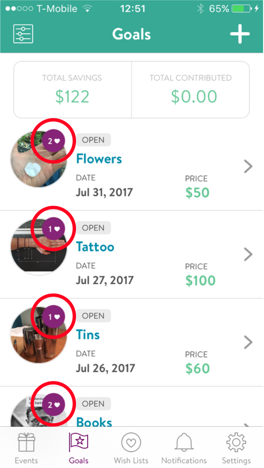
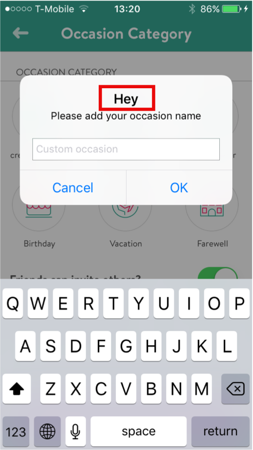
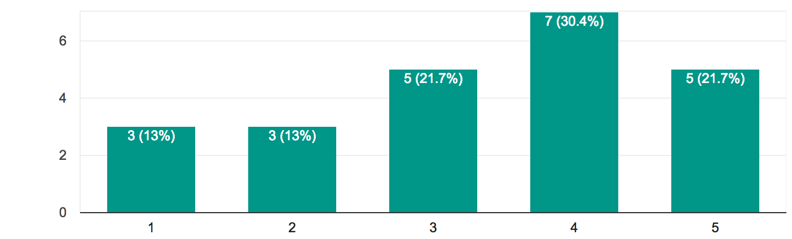
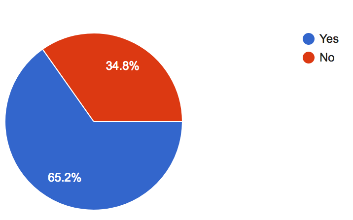
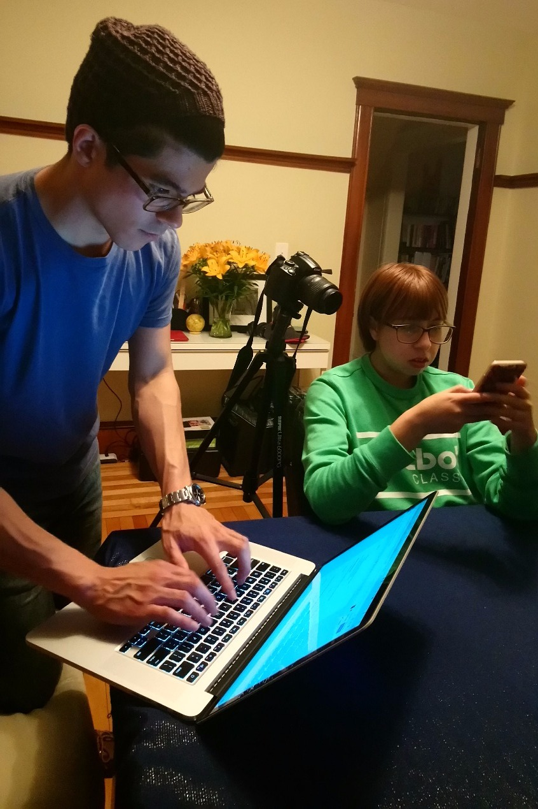

Context
Doni is an application designed to help people — particularly Generation Z — source and gather contributions from their networks to achieve financial goals more quickly. The product also aims to teach Gen Z best financial practices by offering features to advertise goals, events, and wishlists to a user's personal network.
The product was fully functional. Doni wanted input from UX designers to ensure it would resonate with and retain its target audience.
Objective & Goal
Objective: Doni wanted to optimize their existing app and adopt new design features to ensure success with Generation Z — defined in terms of user engagement, satisfaction, return rate, and likelihood to recommend.
Goal: Conduct user research and usability testing to identify pain points in the existing app. Use those insights to make design changes, then prototype and validate with users.
Heuristic Evaluation
We began with a heuristic evaluation to acquaint ourselves with the Doni app — keeping our biases clear by using Jakob Nielsen's 10 usability heuristics as a framework. We committed to only designing on observations that were later validated by users in testing; the evaluation was a lens, not a verdict.
A selection of issues identified:
| Issue | Heuristic Violated | Severity |
|---|---|---|
| Unclear meaning of heart icon on My Goals | #1 — Visibility of System Status | 2 |
| "Hey" pop-up when creating a custom occasion — clumsy and misplaced for the task context | #8 — Aesthetic & Minimalist Design | 2 |


User Research
Survey
To understand how Generation Z functions as a whole, we created a survey using Google Forms and distributed it to personal networks, targeting age-appropriate respondents.


Key findings from the survey:
- 87% would ask family for contributions toward a goal
- 65% would ask friends for contributions
- Most respondents want control over the gifts they receive
- Among those who plan events for others, many use text or online platforms to coordinate — directly analogous to Doni's use case
Overall, the survey validated Doni's strategy. Gen Z has clear interest in controlling their gifts, will source their close networks for contributions, and already uses similar platforms to coordinate events. The opportunity is real — as long as the product keeps users engaged.
Usability Testing
We tested the existing app with four participants, starting with background questions to contextualize each person and ease them into the session. Participants were then asked to complete four core tasks: Sign Up, Create an Event, Create a Goal, and Create a Wishlist.
Post-task, we collected both qualitative observations and 1–7 Likert scale ratings across relevance, ease of use, and satisfaction. Overall, participants liked the app and found it potentially useful. While most encountered friction on first use, familiarity came quickly.
"Hard the first time, easy the second time."
— Reyner, Usability Testing Participant
What Worked
- Signing in with Facebook
- Color scheme
- Idea of fundraising within their network
- Visibility of who donated
Pain Points
- Unclear wording — e.g., "Recipient"
- No home screen to orient the user
- Savings slider was confusing
- Goal duration capped at 3 months
- No photo feature

Usability testing session — moderator running the session while participant interacts with the app on their phone.
Research Synthesis
Affinity Mapping
We extracted meaning from the survey and testing data through an affinity map, surfacing the features users were most interested in:
- Home Screen
- Tutorial / onboarding
- In-app notifications
- Video recording and sharing
- Direct messaging
- Sharing contributions to social media
- Clear language throughout
- Goal planning beyond 3 months
- Automatic / recurring contributions
- A friends/social layer within the app
Problem & Solution Statements
Using a Gen Z persona provided by Doni, we articulated the design target:
As a young adult who wants to save for expensive products instead of making many inexpensive purchases, I need a way to combine my network's resources so that their generosity is put to the best use.
— Problem Statement
Restructure the existing app to allow Gen Z users to clearly express and brand themselves as they raise funds to achieve their goals, all the while developing their existing networking skills.
— Solution Statement
Sketching & Ideation
Design Principles
Before picking up a pencil, we aligned on principles to keep the design process on course:
- Keep the user connected with friends
- Engage users with multiple functions
- Allow users to express identity through the app
- Keep it clear and simple
- Help users reach their goals faster
Design Studio
With those principles as guardrails, we ran a structured design studio — alternating between individual sketching and group critique in timed rounds. The format gave each team member space to generate independently before benefiting from others' perspectives. We arrived at solutions that were stronger for having gone through both solo thinking and collaborative pressure-testing.
Paper Prototype
Combining our wireframes into a paper prototype, we tested with three new participants using the same moderated methodology as the first round. A key finding emerged around transparency: users weren't deterred by Doni's 3.5% transfer fee — but they felt they should have been told about it earlier.
"Woah, I thought you were trying to help me out — now I see what you're doing."
— Liz, Usability Testing Participant
Additional key findings from this round:
- Users wanted a personalized message option when sharing events or goals
- "Title" tested better than "Recipient" — confirmed language change
- Confusion around what an event is for — who the event belongs to
- Desire for a calendar view on recurring contributions
- Price slider was consistently unused and unclear, even when understood
Digital Prototype
Taking the paper prototype feedback, we shifted to grayscale digital wireframes configured into flows in InVision, then tested on an actual iPhone with two participants.
We had introduced a tutorial pop-up for onboarding — designed to be present for those who needed it and easily skipped for those who didn't.
"I'm the kind of person who would go around and see how things work to figure it out — I'm not the person who would read the instructions."
— Luckas, Usability Testing Participant
Key findings from this round:
- Remove "Past" from Friend's project page — not relevant information
- In Wishlist function, change "Add Goal" to "Add to List" to differentiate from "Create Goal"
- Add a (?) icon next to "recurring" to define the term
Feature Evolution
The following features were designed, tested, and iteratively refined across our three prototype rounds. Each was user-validated before being included in the final high-fidelity prototype.
Price & Savings Screen
All users preferred entering monetary values manually over using the savings slider — so we removed it. We also surfaced Doni's 3.5% transfer fee earlier in the flow and added a calculator to give users control over the math.
Home Screen
Users consistently expressed a need for a landing point within the app to help orient them. The home screen we designed let users: make a quick contribution to a friend's goal, see a summary of friends in the app, view how much they had raised vs. others (introducing a light gamification element), and scan a summary of their own goals.
Pop-Up Coaching Screens
The learning curve to understand the app was one of the most cited frustrations — but every participant understood the app's functions by the end of testing. Since the curve wasn't steep, we opted for an easily escapable tutorial pop-up. Those who needed it found it clarifying; those who didn't simply exited and learned by doing.
Friends & Profile Feature
To keep users connected within Doni and as a natural extension of the self-branding profile, we designed a Friends feature. Per user request, we removed visibility of past events and goals from friends' profiles — users didn't find it relevant.
Video & Photo Capture ("My Story")
To keep users engaged and allow genuine self-expression around goals and events, we designed a video/photo feature — named "My Story," drawing from the shared lexicon of social media. The name was immediately understood by all test participants. A (+) icon for adding content was later replaced with "Add Update" after testing revealed the icon alone was ambiguous.
Conclusions
Starting from a broad mandate, the team conducted user research to understand how Gen Z saves, spends, and engaged with the Doni app in its existing form. We identified clarity problems — around language and feature function — and a deeper need for a more engaging, expressive experience.
To address clarity, we revised wording throughout and added a short, skippable coaching layer. To increase engagement, we introduced video/photo storytelling for goals and events, and an in-app friends layer for social continuity.
Every feature was validated through iterative testing, with refinements made at each round. By the final prototype, users were significantly more likely to return to the app — and to recommend it to others. Once they understood the utility, it fit seamlessly into their goals and behavior.